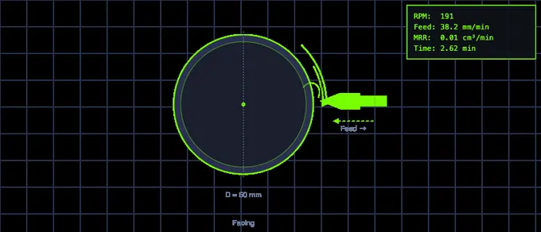
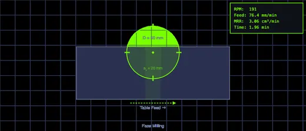
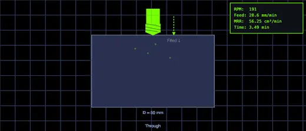

Speeds and Feeds Calculator
3D Model — Speeds and Feeds Calculator
Free speeds and feeds calculator: RPM, feed rate, MRR, cutting force, spindle torque, power and tool life for turning, milling and drilling. Metric and SFM.
RPM, feed rate, MRR, cutting force, spindle torque, power, tool life & surface finish — turning, milling and drilling
Display▾
⚙ Tool geometry, machine & costing
Tool life comes from Taylor’s equation V T n = C, with n set by the tool material and C calibrated from the recommended speed band shown above. Cost per part is machine time plus the share of the edge consumed.
⇄ Feed & Speed Converter — mm/rev, mm/min, IPR, IPM, SFM
Type into any box and every other box follows. This is a standalone converter — it does not change the simulation above. Use Pull from simulator to load the current cut.
Σ Live equations — values substituted from the current cut
⚙ Cutting mechanics — why thin chips cost more force
⏱ Tool life & economics — Taylor’s equation and cost per part
💡 What to change next — reads your current parameters
1 Overview
The Speeds and Feeds Calculator works out every number you need before a cut: spindle speed, cutting speed, feed rate, material removal rate, cutting force, spindle torque, cutting and motor power, machining time, tool life, surface finish and cost per part. It covers three operations and twelve sub-operations — turning (facing, cylindrical, boring, parting), milling (face, end, slot, peripheral) and drilling (through, blind, reaming, tapping) — across 16 work materials and three tool materials.
Every sub-operation changes the model, not just the picture. Facing and parting feed radially, so their travel is the workpiece radius and their mean cutting speed is half the rim speed. Reaming runs at half the drilling speed and removes an annulus rather than a cylinder. Tapping locks the feed to the thread pitch and counts the reverse-out in the cycle time. Switch between them and watch the results move.
2 Entering the Inputs
Pick an Operation and a Sub-Op, then the work material and tool material. The cutting-speed slider re-ranges itself to the recommended band for that combination, and the band is printed next to the Use recommended speed button so you can always get back to a sane starting point.
Every parameter has a slider and a stepper box — drag for feel, type for an exact value. Press Enter or click away to commit a typed number. Labels change with the operation: the feed box reads mm/rev for turning and drilling, mm/tooth for milling, and thread pitch for tapping; the depth box becomes blade width for parting and radial allowance for reaming.
Solve for flips the calculation round. RPM from speed is the usual direction. Speed from RPM lets you enter the spindle speed your machine actually has and read back the cutting speed you are really running — useful on a manual lathe with fixed gear steps. Switching modes seeds the new input from what is already on screen, so the cut never jumps.
Open Tool geometry, machine & costing for the nose radius (which sets surface finish), machine efficiency, shop hourly rate and tool cost per edge. The Preset dropdown loads eleven complete real-world jobs, from roughing mild steel to trochoidal HSM in aluminium and tapping M8×1.25.
3 Reading the Result
Thirteen readout cards update live. Cards that do not apply are hidden rather than showing a dash — mean chip thickness appears only for milling and drilling, and surface finish only where feed marks actually govern the finish.
The canvas animates the operation and carries a live values box, the governing equation with its answer rolled in, and the cutting force and spindle torque. The Display chip at the top-left of the canvas toggles each overlay independently — live values, equation, force and torque, dimensions, chip formation and the background grid.
Use the Units toggle to switch the whole page between Metric and Imperial. All physics stays in SI internally and only the display converts, so the two systems can never disagree. In Imperial the cards read SFM, in/min, IPR, in³/min, lbf, lbf·ft, hp and µin — and the specific cutting force is shown as unit power in hp per in³/min, the figure US handbooks quote, rather than an unusable value in psi.
A warning strip appears when the cut is outside the recommended band, or when the motor power exceeds what a typical workshop machine has. A note under the toolbar explains what the current sub-operation is doing differently.
4 The Formulas Behind It
Press the calculator icon under the canvas to open How Was This Calculated? — a full step-by-step derivation of the current cut, rebuilt from live values every time you open it, with each formula set in classical mathematical notation.
The Learning panels below the results hold four collapsible cards: Live equations (every formula with your numbers substituted), Cutting mechanics (why the specific cutting force rises as the chip thins), Tool life & economics (Taylor’s equation and cost per part) and What to change next, which reads your current parameters and suggests the single most useful change. Use Expand all / Collapse all in the panel header.
Explore mode organises the theory into six categories: Fundamentals, Forces & Power, Turning, Milling, Drilling, and Tool Life & Cost — each with formulas, explanations and worked examples.
Two points worth knowing about the model. Power comes from the Kienzle relation kc = kc1.1 h−mc, so a thin finishing chip correctly costs far more force per square millimetre than a heavy roughing chip — a constant kc understates fine-feed power by up to a factor of two. And tool life uses Taylor’s V T n = C with C calibrated from this page’s own recommended speed bands, so the chart, the sliders and the tool-life card can never drift apart.
5 Converting, Exporting and Saving
The Feed & Speed Converter below the results is a standalone two-way converter: type into any box and every other box follows. It covers diameter in mm and inches, RPM, m/min and SFM, mm/rev and IPR, mm/min and IPM, and feed per tooth in mm and IPT. Pull from simulator loads the cut currently set up above. Changing the converter never disturbs the simulation.
Export CSV writes every input and every result, labelled in whichever unit system is active. Export PNG saves the canvas with a watermark. Right-click the canvas for Copy RPM, Copy all results, both exports, a grid toggle, Show calculation and Reset display.
6 Try a Problem
Practice mode generates twenty kinds of problem across all three operations: spindle speed, cutting speed, feed rate, removal rate for turning, milling and drilling, facing time (where the travel is the radius, not the length), through-hole stroke including the drill point, arc of engagement, mean chip thickness with radial chip thinning, Kienzle specific cutting force, cutting force, cutting power, spindle torque, Taylor tool life and surface finish. Click New Problem, type your answer, then Check. Show Solution gives the full working. Each question carries its own tolerance, so answers that are legitimately below 1 are graded properly.
Quiz mode runs five mixed questions per round from a pool of twenty-one, blending theory with calculation. After the fifth you get a scored review of every question with the correct answers, and a fresh round is one click away.
7 Engineering Notes
- Write the cutting speed on the job card, not the RPM. When the diameter changes after a roughing pass, the RPM must change with it — fixing the RPM instead is how carbide tips get burned.
- Depth and feed cost power but very little tool life. Speed costs tool life dramatically: with carbide at n = 0.25, life varies with the fourth power of speed, so a 19 % speed increase halves it. When you need more metal off per minute, reach for depth and feed first.
- Below about 30 % radial engagement the chip is thinned enough that the tool starts rubbing instead of cutting. The fix is to raise the feed per tooth, not lower it — the coach panel tells you the exact figure.
- Check torque, not power, when the spindle is turning slowly. The same cut needs very different torque at 200 and 2000 rev/min, and it is torque that stalls a machine.
- Compare the motor power card, not the cutting power card, against your machine’s plate rating — efficiency losses are typically 25 %.
- Halving the feed quarters the theoretical Ra; so does doubling the nose radius, and that one costs no cycle time.
- Cost per part has a minimum at a moderate speed. Push harder and machine time falls but tool consumption rises faster. Watch the cost card as you move the speed slider.
How to Calculate Machining Parameters: RPM, Feed Rate, and MRR

Machining parameters are the foundation of every metal-cutting operation. Whether you are turning a shaft on a lathe, face milling a block, or drilling a hole, the same core formulas govern how fast the workpiece or tool rotates, how quickly material is removed, and how much power the machine consumes. Understanding these calculations is essential for selecting the right speeds and feeds, achieving good surface finish, extending tool life, and maintaining safe workshop practices.
The most fundamental relationship in machining is between cutting speed and RPM. Cutting speed (V) is the linear velocity at the tool-workpiece interface, measured in metres per minute. It depends on the workpiece material and the tool material. RPM (N) is the rotational speed of the spindle, calculated as N = 1000 V / (pi D), where D is the diameter of the workpiece or cutter in millimetres. A larger diameter requires a lower RPM to maintain the same cutting speed, which is why RPM must be recalculated whenever the workpiece size changes.
A workshop habit that saves carbide tips: write the cutting speed on the job card, not the RPM. If the diameter changes after a roughing cut, the RPM must change too — otherwise you're either burning the tool or working it too cold. Apprentices fix the RPM and forget; senior machinists fix the cutting speed and recompute RPM each pass. The calculator does the arithmetic so the habit can become muscle memory.

Understanding Feed Rate and Material Removal Rate
Feed rate determines how fast the tool advances through the workpiece. In turning, feed is expressed as millimetres per revolution (mm/rev). In milling, feed per tooth (mm/tooth) is multiplied by the number of teeth and RPM to get the table feed rate in mm/min. Material removal rate (MRR) combines the cutting speed, feed, and depth of cut into a single volumetric measure of productivity, typically expressed in cubic centimetres per minute. Higher MRR means faster production but demands more spindle power and generates more heat, so machinists must balance productivity against tool wear and surface quality.
Machining Power, Force and Torque
Power depends on the removal rate and the specific cutting force kc of the material. kc is not a constant. It follows the Kienzle relation kc = kc1.1 h−mc, where h is the undeformed chip thickness: as the chip gets thinner, a larger share of the energy goes into ploughing and friction rather than clean shearing, so the force per square millimetre climbs steeply. In mild steel (kc1.1 = 1780 N/mm², mc = 0.17) a 0.05 mm chip needs about 3240 N/mm² — roughly 1.8 × the 1 mm reference value. A calculator that treats kc as fixed will understate the power of a fine finishing pass by nearly a factor of two. The simulator above uses the full Kienzle form.
From there everything else follows. Cutting power is Pc = Q kc / (60 × 106) in kW, which is algebraically identical to FcV / 60000 — so the force and the power can never disagree. Motor power is Pc / η, with η around 0.75 for a typical machine tool; that is the figure to compare against the machine plate, not the cutting power. Spindle torque is Mc = 30000 Pc / (πN), and it is torque rather than power that stalls a machine at low RPM.
Tool Life and the Real Cost of Speed
Taylor’s equation V T n = C is the oldest relationship in metal cutting and still the one that decides what a job costs. The exponent n comes from the tool material — about 0.125 for HSS, 0.25 for carbide and 0.45 for ceramic — while C is the cutting speed that would give one minute of life. Rearranged, T = (C / V)1/n.
The consequence is severe and routinely underestimated. With carbide at n = 0.25, tool life varies with the fourth power of cutting speed: raising the speed by just 19 % halves the life of the edge. Feed and depth of cut affect life far more gently while raising the removal rate just as effectively. This is why the productive answer to “we need more parts per hour” is almost always a heavier cut at a moderate speed, not a faster spindle. Cost per part — machine time plus the share of the insert consumed — has a clear minimum at a moderate speed, and the calculator above shows it moving as you drag the speed slider.
Chip Thinning and High-Speed Machining
In milling, the feed per tooth you program is not the chip thickness the tool actually sees. The arc of engagement is φs = arccos(1 − 2ae/D), and the mean chip thickness is hm = 360 aefz / (πDφs). At a full slot the chip averages 2fz/π, about 64 % of the programmed feed. Take a light radial cut — a 12 mm cutter at 1.5 mm engagement — and the mean chip collapses to roughly a third of the feed per tooth.
Below about 30 % radial engagement this matters enough to change the answer: the tool starts rubbing rather than cutting, which work-hardens the surface, generates heat without removing metal, and kills the edge. The correction is counter-intuitive to most beginners — you must raise the feed per tooth, by the radial chip-thinning factor D / (2√(ae(D−ae))), to bring the chip back to a sensible thickness. That is the whole principle behind trochoidal and dynamic milling: a small radial engagement with a large axial depth and a very high feed, keeping the heat in the chip and spreading wear along the full flute length.

Choosing Cutting Speeds for Different Materials
Each material has a recommended cutting speed range that depends on the tool type. HSS tools operate at lower speeds, carbide tools at two to five times higher, and ceramic tools at even greater speeds for finishing operations. Aluminum, being soft and thermally conductive, allows the highest speeds (up to 500 m/min with carbide), while titanium requires the lowest (40-80 m/min with carbide) due to its low thermal conductivity and tendency to work-harden. Selecting the correct cutting speed prevents premature tool failure, chatter, and poor surface finish.
Who Uses This Simulator?
This speeds and feeds calculator is built for mechanical engineering students, CNC operators, workshop instructors, tool room technicians and manufacturing engineers. Students get twenty kinds of generated practice problem, full step-by-step working for every result, and Explore cards covering forces, chip thinning, tool life and cost. Machinists get spindle speed, feed, removal rate, cutting force, spindle torque, motor power, tool life, surface finish and cost per part for twelve distinct sub-operations across sixteen materials, in Metric or Imperial, with CSV export and a two-way feed and speed converter.
US Machining Conventions: SFM and IPM
In US machine shops, cutting speed is expressed in SFM (Surface Feet per Minute) rather than m/min. Feed rates use IPM (Inches per Minute) for table feed and IPR (Inches per Revolution) for turning feed. The underlying formulas are identical — only the unit conversion changes. To convert: 1 m/min = 3.281 SFM; 1 mm/min = 0.03937 IPM. The RPM formula in US form is N = (SFM × 3.82) / D(inches), where 3.82 = 12/π. Most US machining handbooks (Machinery’s Handbook, HSMAdvisor) list recommended cutting speeds in SFM by material and tool type.
For US CTE students: NIMS Machining Level 1 credentials (Turning Operations Between Centers, Milling Skills, Drill Press Skills) all require calculating spindle speeds using the SFM formula. State CTE manufacturing courses aligned with the CCTC Manufacturing Career Cluster include speeds-and-feeds calculations as a core performance indicator. The calculator above uses metric inputs — multiply your SFM value by 0.3048 to get m/min before entering it.
Machining Formulas — Quick Reference
| Parameter | Metric formula | US / Imperial formula |
|---|---|---|
| Cutting Speed | V = π × D(mm) × N / 1000 (m/min) | SFM = π × D(in) × N / 12 |
| Spindle Speed | N = 1000 × V / (π × D) (RPM) | N = (SFM × 3.82) / D(in) (RPM) |
| Feed Rate (milling) | F = fz × z × N (mm/min) | IPM = IPT × z × N |
| Feed Rate (turning) | f × N (mm/min) | IPR × N (IPM) |
| Material Removal Rate | MRR = ap × ae × F (mm³/min) | MRR = DOC × WOC × IPM (in³/min) |
| Machining Time (turning) | T = L / (f × N) (min) | T = L / (IPR × N) (min) |
| Power at Spindle | Pc = Fc × V / 60,000 (kW) | HP = MRRin³/min × Kp (horsepower) |
| Specific Cutting Force | kc = kc1.1 × h−mc (N/mm²) | Kp = kc × 3.663 × 10−4 (hp/in³/min) |
| Cutting Force | Fc = kc × b × h (N) | Fc × 0.2248 (lbf) |
| Spindle Torque | Mc = 30,000 × Pc / (π × N) (N·m) | T = 5252 × HP / RPM (lbf·ft) |
| Milling Chip Thickness | hm = 360 ae fz / (π D φs) (mm) | same form, inches |
| Tool Life (Taylor) | V × T n = C (min) | SFM × T n = C (min) |
| Surface Finish | Ra ≈ f² / (31.2 rε) (µm) | Ra ≈ f² / (31.2 rε) (µin, f & r in in) |
| Drilling Torque | Mc = kc f D² / 8000 (N·m) | — |
Cutting Speed & Feed Chart by Material
Typical starting cutting speeds and chip loads. Speeds are given in both m/min and SFM (surface feet per minute) so the chart works with metric and imperial machines. Filter by material below.
| Work material | HSS m/min | HSS SFM |
Carbide m/min | Carbide SFM |
Chip load f₢ mm/tooth, ø10 mm |
|---|---|---|---|---|---|
| Aluminium (6061, 7075) | 70–150 | 230–492 | 250–600 | 820–1968 | 0.05–0.15 |
| Aluminium (cast) | 60–120 | 197–394 | 200–450 | 656–1476 | 0.05–0.13 |
| Brass (free-cutting) | 70–120 | 230–394 | 180–350 | 591–1148 | 0.05–0.13 |
| Bronze | 30–60 | 98–197 | 100–250 | 328–820 | 0.04–0.10 |
| Copper | 40–70 | 131–230 | 120–250 | 394–820 | 0.04–0.10 |
| Cast iron (grey) | 20–35 | 66–115 | 70–140 | 230–459 | 0.05–0.13 |
| Cast iron (ductile) | 15–28 | 49–92 | 60–120 | 197–394 | 0.05–0.10 |
| Mild steel (1018, S235) | 25–40 | 82–131 | 100–200 | 328–656 | 0.05–0.13 |
| Medium carbon steel (1045) | 18–30 | 59–98 | 80–160 | 262–525 | 0.04–0.10 |
| Alloy steel (4140, 42CrMo4) | 15–25 | 49–82 | 70–140 | 230–459 | 0.04–0.10 |
| Tool steel (annealed) | 12–20 | 39–66 | 50–100 | 164–328 | 0.03–0.08 |
| Stainless steel (304, 316) | 12–22 | 39–72 | 60–120 | 197–394 | 0.04–0.10 |
| Stainless steel (410, 416) | 18–28 | 59–92 | 80–150 | 262–492 | 0.04–0.10 |
| Titanium (Ti-6Al-4V) | 8–15 | 26–49 | 30–60 | 98–197 | 0.03–0.08 |
| Inconel / nickel alloy | 5–10 | 16–33 | 15–35 | 49–115 | 0.02–0.06 |
| Magnesium | 90–180 | 295–591 | 250–600 | 820–1968 | 0.05–0.15 |
| Plastics (acetal, nylon) | 100–250 | 328–820 | 200–600 | 656–1968 | 0.05–0.20 |
| Acrylic / PMMA | 80–200 | 262–656 | 150–400 | 492–1312 | 0.05–0.15 |
These are starting points, not limits. Actual speeds depend on coating, rigidity, coolant, depth of cut and how much overhang the tool has — a coated carbide insert in a rigid lathe will run far above the top of these bands, while a long reach in a light machine will need the bottom of them. Reduce speed for interrupted cuts and increase feed rather than speed when tool life is short. Chip load is per tooth for a 10 mm cutter; scale roughly with diameter, and thin the chip (increase feed) when radial engagement is below about 30% of the cutter diameter, or the tool rubs instead of cutting. Convert with SFM = m/min × 3.281 and RPM = 1000 × Vc / (π × D) for metric, or RPM = 12 × SFM / (π × Din).
Frequently Asked Questions
How do I convert mm/rev to mm/min?
Multiply the feed per revolution by the spindle speed: vf = f × N. A feed of 0.25 mm/rev at 1800 rev/min gives 0.25 × 1800 = 450 mm/min. To go the other way, divide the feed rate by the RPM. In milling you need one more step, because feed is quoted per tooth: vf = fz × z × N. The Feed & Speed Converter in the simulator does all of these both ways, including IPR and IPM.
How do I convert IPR to mm/rev?
Multiply inches per revolution by 25.4. An IPR of 0.005 is 0.005 × 25.4 = 0.127 mm/rev. The same factor converts IPM to mm/min, and SFM to m/min uses m/min = SFM × 0.3048 (or SFM = m/min × 3.281).
How do I calculate machining time?
Divide the total tool travel by the feed rate: T = Ltravel / vf. The trap is the travel, not the arithmetic. Facing and parting feed radially, so the travel is the workpiece radius, not its length. A through hole must add the drill point — about 0.3 D for a 118° twist drill — plus breakthrough clearance. Face milling and slotting need a full cutter diameter for approach and overtravel; a light side cut needs only 2√(ae(D−ae)). The simulator applies the right travel for each of its twelve sub-operations and prints it on the canvas.
What is the material removal rate formula?
For turning, Q = π × D × ap × f × N in mm³/min, which is the same as 1000 × ap × f × V. For milling, Q = ae × ap × vf. For drilling, Q = πD²fN / 4. Divide any of them by 1000 to get cm³/min. Worked turning example: D = 50 mm, ap = 2 mm, f = 0.2 mm/rev, N = 191 rev/min gives π × 50 × 2 × 0.2 × 191 = 12 000 mm³/min = 12.0 cm³/min.
How do I calculate cutting force in milling?
Find the mean chip thickness first, then the specific cutting force at that thickness, then the force. The mean tangential force over one revolution is Fc = kc × ap × hm × z × φs/360, where φs/360 accounts for the fraction of the revolution each tooth spends in the cut. Skipping the chip-thinning step is the usual source of error: at light radial engagement it can be wrong by a factor of three.
What speed should I use for tapping?
Roughly a quarter of the drilling speed for the same material, and the feed is not yours to choose — it must equal the thread pitch exactly, because the tap is guided by the thread it is cutting. Cycle time counts the reverse-out as well as the cut. Reaming sits between the two: about half the drilling speed, with two to three times the drilling feed, removing only 0.1–0.3 mm on the radius. A reamer fed too slowly rubs, work-hardens the bore and bell-mouths the entry.
Explore Related Simulators
If you found this machining calculator helpful, explore our Lathe Machine Simulator, Milling Machine Simulator, Drilling Machine Simulator, and CNC G-Code Trainer, and the Sheet Metal Bend Radius Calculator for more hands-on practice.